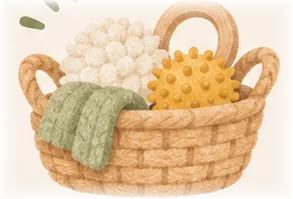

01 / REAL INGREDIENTS월 2회 · 실제 식재료
쌀가루, 감자전분, 채소와 과일 등 주제에 맞는 재료를 감각 탐색에 활용합니다.
7개월부터 48개월까지. 아이의 감각, 움직임, 표현이 달라지는 시기에 맞춰 영어와 놀이의 경험도 섬세하게 조정합니다.

PLAY AT THEIR OWN PACE각 구간은 기본 안내용이며, 실제 수업 편성은 아이의 상태와 운영 일정에 따라 조정됩니다.
보호자와 함께 소리, 촉감, 표정의 작은 변화를 느껴요.
움직이고 반복하며 물체와 소리에 차츰 익숙해져요.
좋아하는 색과 소리, 의성어에 반응하며 표현을 시작해요.
재료를 고르고 비교하며 자신만의 탐색 방법을 만들어 가요.

그림책을 통해 상상하고 감각놀이를 간단한 표현 활동으로 넓혀요.
활동별 소요 시간은 아이의 반응과 수업 주제에 따라 유연하게 운영됩니다.
보호자와 함께 편안히 공간과 선생님을 만납니다.
익숙한 소리와 리듬으로 주제에 들어갑니다.
재료를 직접 만지고 느끼며 스스로 발견합니다.
느낀 점을 다양한 방식으로 표현하고 마무리합니다.
쌀가루, 감자전분, 채소와 과일 등 주제에 맞는 재료를 감각 탐색에 활용합니다.
계절감이 있는 질감과 색, 자연의 모양을 탐색하거나 아트로 연결합니다.
수업 전 알레르기 등 주의사항을 확인하고, 작은 부품·입에 넣는 행동 등 월령별 위험 요소를 고려해 활동을 준비합니다. 식재료를 사용하더라도 섭취를 목적으로 하는 수업은 아닙니다. 활동 내용과 재료는 상황에 따라 변경될 수 있습니다.
우리 아이와 맞는 프로그램이 궁금하신가요?
상담을 통해 월령과 수업을 안내해 드립니다.